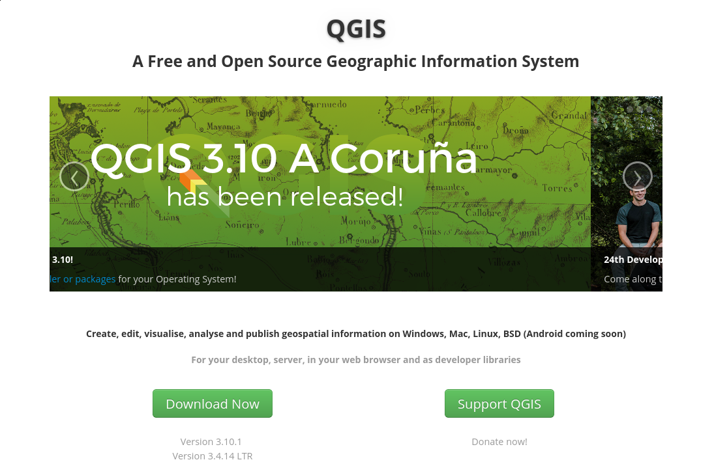
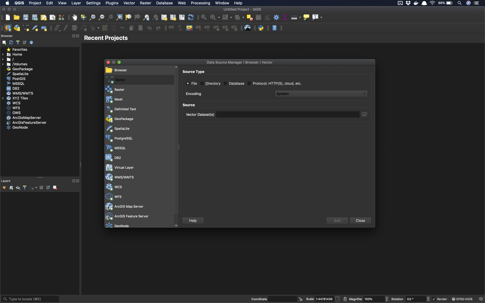

Open Source GIS¶
GIS Software¶

Open Source, Open Science Open Education¶
Freedom¶
Free as in Beer
Free as in Speech
Why Open Source GIS?¶
Open Science (Why?)¶


Open Education¶
access to quality education is everyone’s birthright
human knowledge is a public good that should be available to all
human knowledge is a public good that we all can contribute to
QGIS¶

QGIS Community¶

Data¶
For this lecture, download our example data
Open QGIS¶

Load a Vector Layer¶

Vector Layer Loaded¶

Interface Components¶
Menu Bar¶

Tool Bar¶

Canvas¶

Browser Panel¶

Layer Panel¶

Locator Bar¶

Status Bar¶

Working with Projects, Files, and Directories¶
Load two new layers

Projects¶
What is a QGIS Project?¶
A
meta-filethat defines the files associated with an analysisA
project filerecords locations of files related to aprojectExtension:
gqz

Saving a project¶

Project Save Dialog¶

Project Saved¶

Project File¶

Quit QGIS¶

Opening Project on a different computer (and operating system)¶
Linux File Browser¶

QGIS on Linux¶

Open Project on Linux¶

Our Project on Linux¶